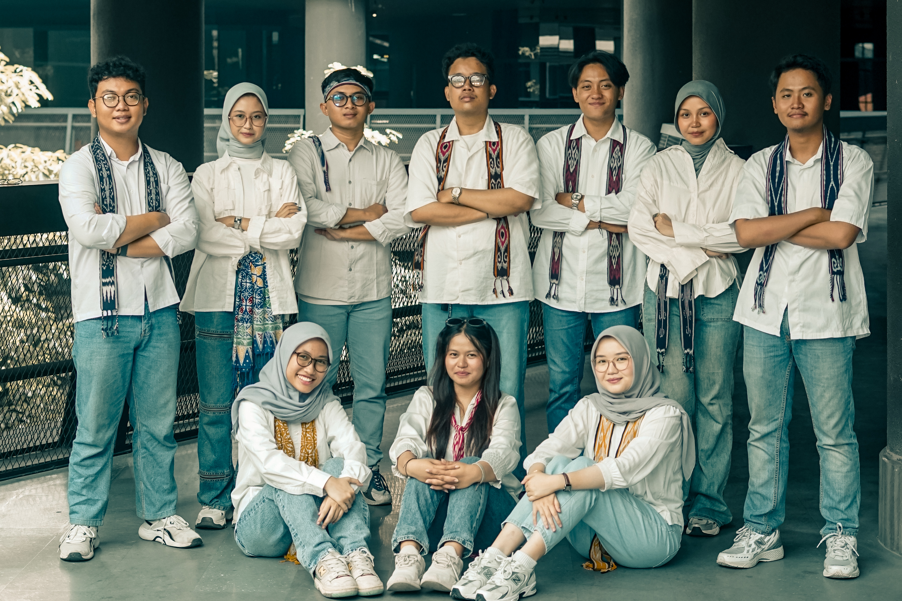
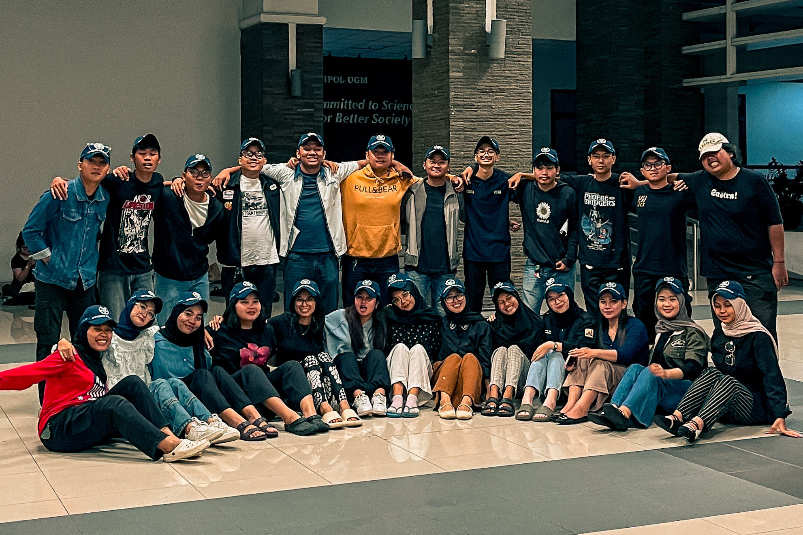
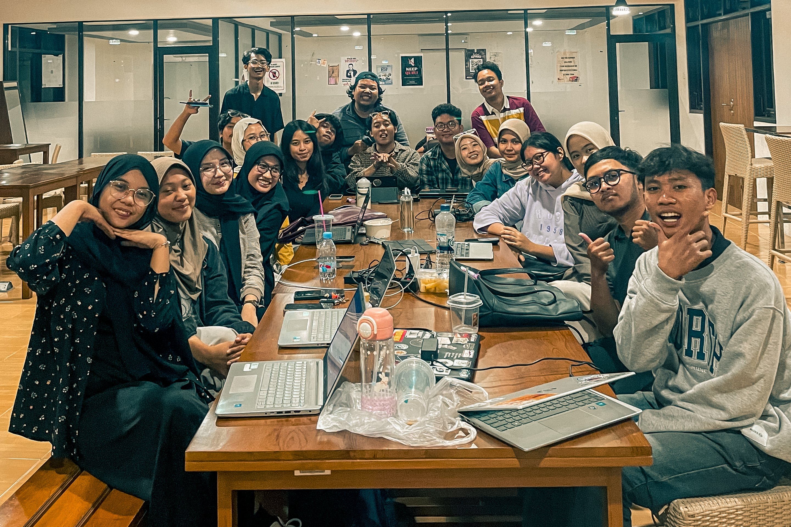

Menuju Upacara Penerjunan
Countdown menuju Upacara Penerjunan KKN Periode 4 Tahun 2025 dan Keberangkatan KKN
19 Desember 2025 Mengukir dan Merajut Cerita di Karimun Jawa Dimulai
Perjalanan Operasional KKN
Grafik persentase operasional KKN dari tanggal 19 Desember 2025 hingga 7 Februari 2026. Ikon penyu akan berenang dari kiri ke kanan sesuai persentase yang telah terlampaui.
0%
19 Des 2025
7 Feb 2026
Penyu akan terus berenang membersamai kawan Renjana Karimun Jawa hingga akhir periode
Galeri Renjana
Sedikit momen hangat kebersamaan kami







Menuju Penarikan KKN
Hitungan mundur menuju Penarikan KKN-PPM UGM Periode 4 Tahun 2025
7 Februari 2026 - Hari penutupan dan refleksi pengabdian